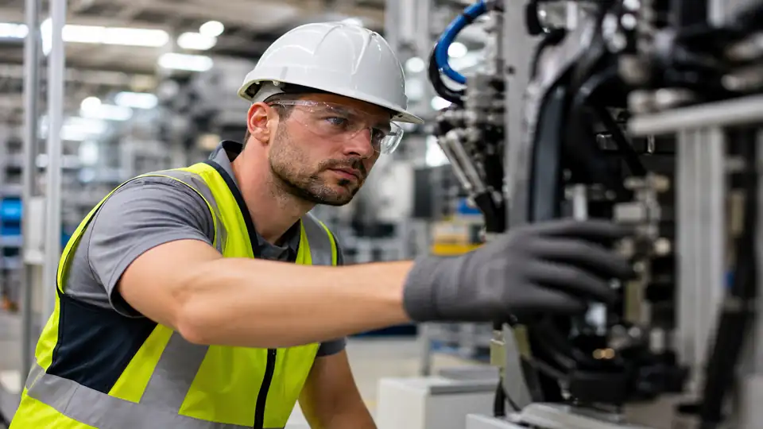
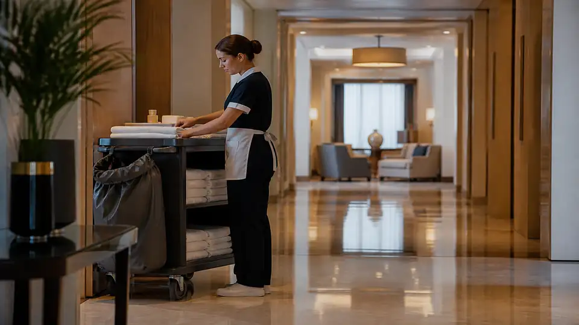

Cantiere
Ti prendiamo la sicurezza del lavoro. Dall’apertura resti seguito, fino alla chiusura.


Sicura segue il tuo lavoro in tutta Italia, con la dottoressa Nicoletta Cioni. Dall’apertura del cantiere resti accompagnato, fino alla certificazione.
Scrivi a SicuraTi prendiamo la sicurezza del lavoro. Dall’apertura resti seguito, fino alla chiusura.
Collaboratori, medici e laboratori di analisi rispondono a Sicura, sullo stesso percorso.
Scadenze, ispezioni e carte restano in ordine, fino alla certificazione del lavoro.
Una divisione sola. Dentro, il cantiere, le persone e i documenti.
Il cantiere entra in carico a Sicura. Resti seguito mentre il lavoro è aperto, fino alla chiusura.
La rete è di Anche Casa. La sicurezza la tiene Sicura, con la stessa disciplina in tutta Italia.
Ti accompagniamo lungo il percorso. Il lavoro chiude con i documenti e la certificazione in ordine.
Prima il cantiere in carico. Poi le persone del percorso, i controlli e la certificazione.

Ti teniamo l’incarico di RSPP esterno, il documento di valutazione e i rapporti con gli organi di vigilanza.

CSP, CSE, piani di sicurezza e direzione lavori, fino alla chiusura.

Corsi obbligatori e abilitazioni per le attrezzature.

Sorveglianza sanitaria e protocolli per ogni mansione.

Ti prepariamo alla certificazione e restiamo sul seguito, quando il sistema è già in piedi.

Carichi di lavoro, coaching e supporto al personale.

Processi, ruoli e procedure operative.

Adeguamento documentale e formazione privacy.

Ti seguiamo mentre il cantiere è aperto. Il controllo resta nel lavoro, insieme a te.

Stabilimenti e impianti, con la stessa disciplina del cantiere.
Uffici e sedi della rete Anche Casa, in ogni regione.

Strutture ricettive, con persone, turni e luoghi da tenere in regola.
Dall’apertura alla certificazione, in tutta Italia, con la dottoressa Nicoletta Cioni.
Scrivi a Sicura